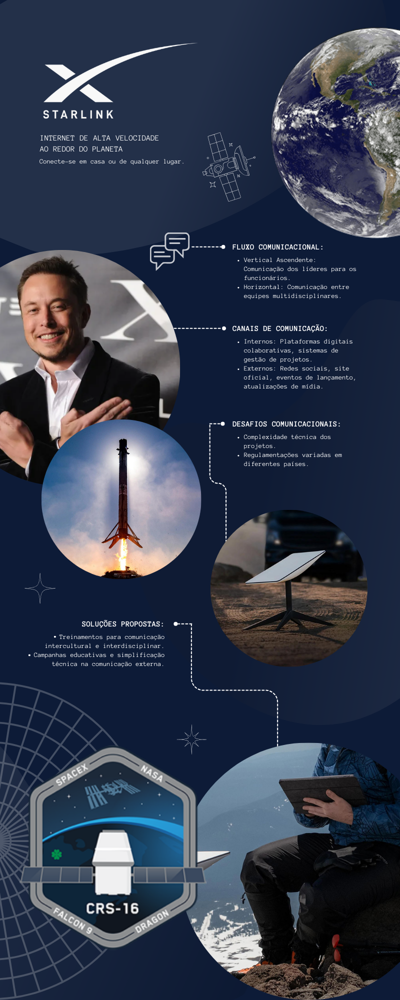

A comunicação empresarial
A Starlink utiliza um fluxo comunicacional predominantemente vertical ascendente onde há uma comunicação direcionada dos líderes e gestores para os funcionários e colaboradores, mantendo assim, um bom alinhamento e motivação entre suas equipes distribuídas globalmente enquanto promove um ambiente de inovação constante.
Internamente, a Starlink utiliza ferramentas de comunicação digital, como plataformas colaborativas e sistemas de gestão de projetos para coordenar equipes distribuídas globalmente. Externamente, se comunica por meio de canais como o próprio site da Starlink e até mesmo por redes sociais (considerando principalmente o X, antigo Twitter, sendo outra empresa do Elon Musk), engajando o público globalmente.
Alguns dos problemas potenciais podem incluir a necessidade de garantir uma comunicação eficaz entre equipes distribuídas geograficamente, a complexidade técnica dos projetos que pode dificultar a compreensão para o público geral e desafios regulatórios em diferentes países.
Diante do exposto, a Starlink poderia investir em treinamentos para melhorar a comunicação intercultural e interdisciplinar entre suas equipes. Além disso, a transparência comunicacional também poderia ser beneficiada por meio de campanhas educativas e simplificação técnica em sua comunicação externa.
